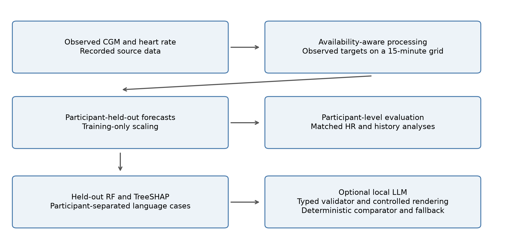
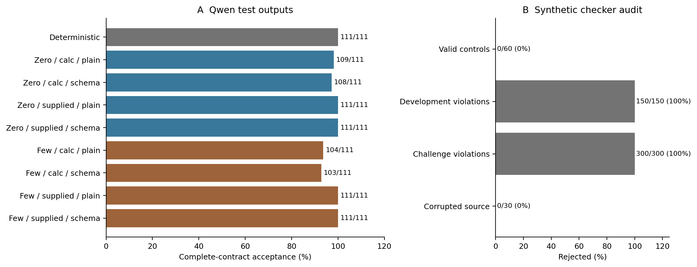
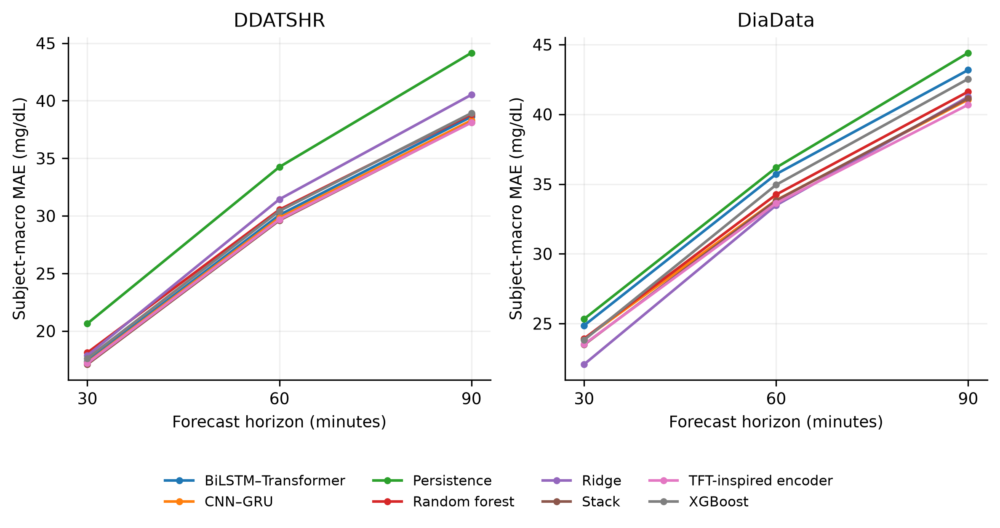
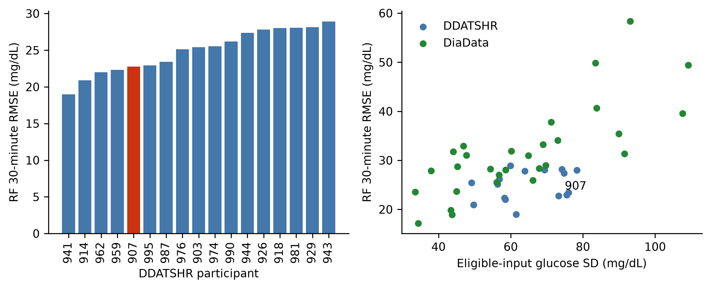
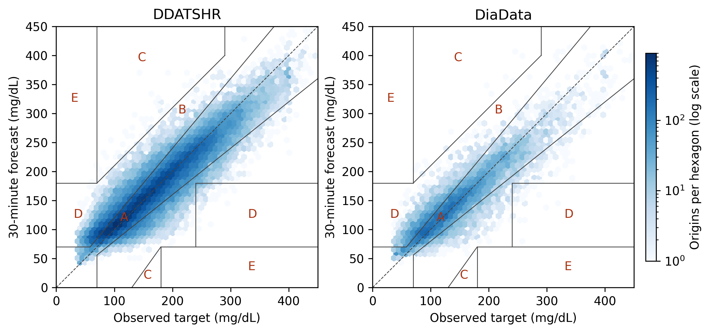
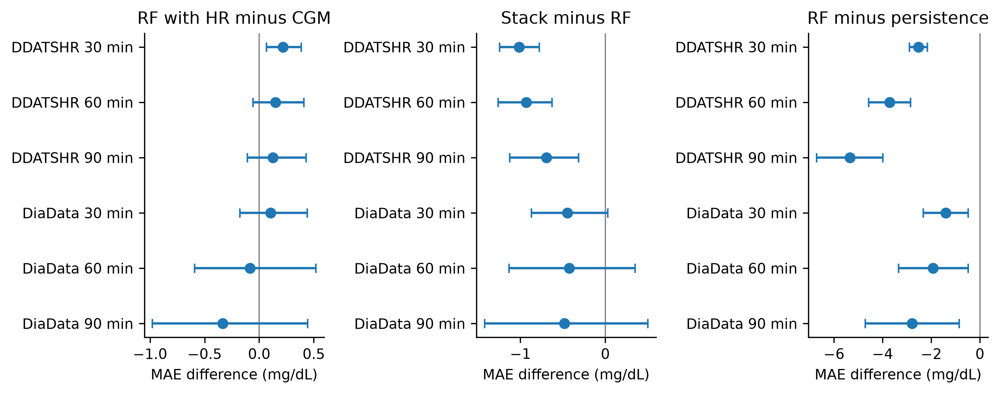
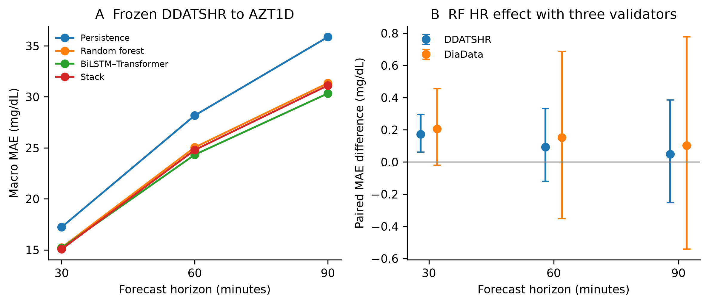

Article
Md. Najmul Hossain 1, Jong-Nam Kim 1,*
1 Department of AI Convergence, Pukyong National University, Busan 48513, Republic of Korea
* Correspondence: kjnam@pukyong.ac.kr
Abstract: This retrospective benchmark compares glucose forecasting under observed-input availability constraints and evaluates structured local Qwen output consistency. Participant-held-out analyses retained 17 DDATSHR participants (72,414 origins) and 29 non-DDATSHR DiaData participants (14,500 origins). DDATSHR Random Forest (RF) subject-macro MAE was 18.12/30.54/38.82 mg/dL at 30/60/90 minutes. Stack improved RF after Holm correction across 18 comparisons in DDATSHR, by approximately 1 mg/dL, but not in DiaData; HR addition showed no significant RF benefit. A full five-member Stack sensitivity used three validation participants and 690 base fits. Eight Qwen conditions crossed zero/few shot, calculated/supplied direction and plain/schema decoding on 111 preselected test cases from 38 participants, following development on 24 cases from eight other people. LLM acceptance ranged from 103/111 to 111/111, versus 111/111 for deterministic rendering. Supplied direction improved participant-macro acceptance by 4.71 percentage points (exploratory Holm p=0.004845); neither few-shot prompting nor schema enforcement improved acceptance significantly. The checker accepted faithful copies of all 30 deliberately corrupted source inputs. Frozen glucose-only transfer used 24 AZT1D participants. The findings characterize cohort-specific forecasting and contract preservation; human understanding and clinical usefulness remain unevaluated.
Keywords: glucose forecasting; continuous glucose monitoring; heart rate; patient-held-out evaluation; large language models; zero-shot prompting; output consistency
Continuous glucose monitoring supports forecasting future glucose, while attribution and language interfaces raise separate questions about fidelity and usefulness. We compare established forecasting methods under matched observed CGM/HR availability and evaluate an optional zero/few-shot local LLM after held-out RF attribution. The workflow follows the earlier GlucoSense research question, with the present benchmark and structured-output evidence defining the scope of this paper.
The independent adolescent DDATSHR cohort [1] is the primary focus. Its observed CGM and heart-rate signals support a reduced two-modality implementation, not reconstruction of every modality in the earlier system. A second analysis uses the non-DDATSHR portion of DiaData. Forecasting, attribution and language-output checks are evaluated separately so a faithful description of an inaccurate forecast is not counted as clinical validation.
The primary DDATSHR and secondary DiaData analyses develop models within each cohort and evaluate held-out participants. A separate experiment freezes newly trained DDATSHR glucose-only models before AZT1D scoring. Neither design evaluates the unavailable historical six-modal checkpoint. This distinction follows the separation of model development and evaluation emphasized by TRIPOD+AI [2]. Generation timings concern sequential requests to an already loaded model using precomputed RF/TreeSHAP cases.
This study follows an earlier GlucoSense publication [3], but constitutes newly trained, reduced-input retrospective experiments. The earlier six-modal checkpoints, modality reconstruction outputs and original evaluation predictions are unavailable in this repository. We therefore do not treat its reported OhioT1DM accuracy as independently verified evidence, do not reuse its architecture artwork, and do not interpret a numerical difference from that article as a causal modality effect. The supplied OhioT1DM documentation also does not substantiate the raw wrist-PPG reconstruction pathway described previously [4]. These provenance limitations require a different scope from a locked-model external validation claim.
The contribution is an observed-data benchmark that couples availability-aware, participant-held-out forecasting with a source-relative structured-output audit. It adds matched HR comparisons, a full three-validator Stack sensitivity and participant-separated Qwen controls that distinguish direction calculation from preservation and schema enforcement. Established methods form the workflow. The negative generation finding concerns a fixed supplied-field contract, for which deterministic rendering is sufficient; human usefulness of unrestricted language explanations remains an open question.
H1 tests the added predictive information of HR in RF on matched windows. H2 tests Stack versus RF and RF versus persistence. An exploratory generation question examines contract violations and acceptance coverage of zero/few-shot output. Its descriptive design does not test clinical benefit, patient trust or live deployment.
Kolev et al. present a broad multi-method glucose benchmark [5]. Their Methods specify that the reported experiments used physics-based synthetic datasets because original downloads were unavailable. This differs from the observed DDATSHR and DiaData records examined here. Published RMSE values from that work are consequently not inserted into our matched comparison. More generally, model rankings across papers cannot control for patient identity, target construction, history length or data access.
The neural models use established recurrent, convolutional and attention components. Temporal Fusion Transformers (TFT) provide a multi-horizon forecasting architecture [6], and Transformer attention provides a general sequence-modelling component [7]. Our TFT-inspired encoder omits parts of the original TFT and is labelled accordingly. XGBoost and tree attribution follow their method descriptions [8, 9]. These references motivate implementations; they do not establish a glucose-specific benefit of the tested configurations.
GlucoFM-Bench [10] and Chronos-2 [11] provide context for time-series foundation-model research; both cited reports are preprints. Their data access, context lengths and evaluation settings differ from this observed-only protocol. We make no matched performance claim against a foundation model and do not claim the first multi-dataset glucose benchmark.
Cinar and Maleshkova introduced DiaData and subsequently studied quality-enhanced hypoglycemia classification [12, 13]. Their processing includes outlier handling and gap interpolation. Our regression task instead uses the raw export and observed targets, retains source labels and evaluates generalization to held-out people. It is not a replication of their classifier or a claim that interpolation is inappropriate for every retrospective application. HR refinement remains an active topic, including a recent preprint on short-term hypoglycemia prediction [14].
Alredaini et al. compare conventional, deep and language-model glucose forecasting for type 2 diabetes, including SHAP and language explanations [15]. GlucoLens examines postprandial prediction and counterfactual support using wearable and dietary information [16]. These studies rule out a broad first-use claim for language models or explanation in glucose research. Our narrower emphasis is a machine-auditable contract, patient-separated generation cases, a deterministic comparator and a measured source-truth failure boundary.
SHAP assigns additive feature attributions to individual predictions [17], and TreeSHAP provides a tree-specific implementation [9]. Attribution describes model behaviour and does not establish physiological causation. Miller’s account of explanation emphasizes the needs of the person receiving an explanation [18], while Ghassemi et al. caution against treating current explainability methods as evidence of trustworthy clinical operation [19]. We therefore distinguish model attribution from human understanding and treatment safety.
Few-shot prompting can specify tasks through examples without updating model parameters [20], but its benefit depends on the task and model. Here it is evaluated against both zero-shot generation and deterministic rendering. Complete-contract acceptance measures preservation of supplied fields. It does not measure whether users understand an explanation, calibrate their trust appropriately or make better decisions. Those outcomes require a separate human evaluation; early live clinical assessment is addressed by DECIDE-AI [21].
Acceptance also differs from probabilistic calibration, which concerns the relation between confidence and correctness [22]. Rejecting outputs introduces an acceptance–coverage trade-off analogous to selective prediction [23], but our validator supplies no calibrated risk guarantee. Prediction-interval coverage is another separate quantity; conformal methods require assumptions such as exchangeability that cannot simply be presumed under participant or source shift [24]. These distinctions define what the present checks can and cannot establish.
The evaluated workflow consists of recorded-data processing, cohort-specific forecasting, RF attribution, optional local structured generation and deterministic validation/rendering. The historical five-layer GlucoSense architecture provides context, while only components supported by executable retrospective experiments are evaluated here.
The original GlucoSense framework [3] includes Data Sources, Preprocessing, Model Inference, Risk Scoring and Emergency Alerts, and Application. In this study, recorded CGM/HR feed preprocessing and forecasting. Forecasts branch to participant-level evaluation and held-out RF attribution, as shown in Figure 1. The optional language model receives RF predictions and TreeSHAP fields; it does not explain the stack. A study-only score supports a consistency test. Emergency dispatch, dashboards and patient-facing clinical operation are outside the evaluated workflow.

Figure 1. Primary retrospective workflow. After temporal alignment, forecasting branches to participant-level evaluation and held-out RF attribution; attribution supplies the optional local generation experiment. Deterministic rendering is the comparator and fallback. The separately reported AZT1D transfer uses glucose-only inputs.
The original design describes CGM, HRV/vitals, sleep and EHR processing streams [3]. The adolescent records do not contain all of these streams. Consequently, this evaluation implements observed CGM/HR processing and tests its reduced models; it does not claim that imputed SpO₂, blood pressure, sleep or EHR features reproduce the historical 88-dimensional representation.
Each primary input contains nine boundaries spanning two hours. Channels are CGM, HR and the sine/cosine of time of day. For participant p, forecast origin t and history index k, X(p,t,k,c) denotes channel c at the k-th available historical boundary. Targets Y(p,t,h) are observed glucose values in the bin labelled t+h, where h is 30, 60 or 90 minutes. This notation consistently distinguishes participant, origin, history and channel indices. The actual target reading can precede the bin boundary; horizons refer to the stated grid convention.
All historical channels and all three future glucose targets must be finite. A participant needs at least 50 eligible origins. The same patient/timestamp manifest is used by every primary model and by the CGM-only ablation, which removes HR from the input without changing eligibility. This isolates its conditional predictive contribution among HR-observed windows; it does not estimate benefit in participants whose HR is absent. Complete-case selection can favor better-recorded periods and is reported explicitly.
For the primary two-modality analysis, the input dimensions are explicitly:
X(p,t) = [X(p,t,k,c)] with k = 0,…,8 and c ∈ {CGM, HR, sin(time), cos(time)}. (1)
The original composite score depends on physiological channels unavailable in these cohorts. The present experiment therefore uses a declared artificial score and numbered tiers solely to test categorical consistency. No push, SMS, email or phone alert was dispatched, and the tiers are not clinical triage labels.
The deterministic, zero-shot and few-shot conditions return the same declared JSON contract: latest available glucose/HR and input delay, three forecasts, recent rate, a study-only score, three SHAP entries, a tier and a direction. The score is an explicitly artificial consistency task: its base is 85 at glucose ≤70 or ≥250, 55 at ≤80 or ≥200 otherwise, and 20 elsewhere; min(15,5×absolute recent rate) is added and the result capped at 100. Half-open boundaries 40/60/80/95 map it to five numbered tiers. Direction compares the 90-minute forecast with the latest input using ±5 mg/dL. Neither the score nor its tiers constitute a validated clinical triage protocol.
DDATSHR remains the primary independent adolescent cohort in the paper. DiaData is a secondary source-separated analysis, not another adolescent cohort and not assumed independent of every source mentioned in the earlier publication.
DDATSHR was acquired at Git commit 36379d9397d05bb00ac20cf91a5a2b648fecfafe. The Abbott, Medtronic and population CSV files match upstream Git objects, and the HR file matches its Git-LFS SHA-256 object. The parser quarantines records whose field count disagrees with the header; it does not silently shift columns to accommodate unquoted text. Source hashes and quarantined line numbers are retained. Glucose in mmol/L is converted using 18.0182 mg/dL per mmol/L.
For DDATSHR, bins are right-closed and right-labelled at 15-minute boundaries. The latest observed CGM within each completed bin and mean observed HR are used; no interpolation or forward filling is performed. The 15-minute grid respects the slower Abbott stream rather than requiring an observation every five minutes. Offset-free timestamps are excluded. The ambiguous 27 October 2019 interval is excluded, along with Medtronic records until the first subsequent recorded clock adjustment plus two hours, and two-hour neighborhoods of other clock adjustments. All Medtronic participants with post-transition glucose have a recorded subsequent adjustment. Local-date CGM and UTC-date HR exclusions are conservatively applied as specified in code; remaining device-clock uncertainty cannot be eliminated retrospectively.
DiaData uses Zenodo record 17285631 and the raw SDBII file within the 15-minute archive. The downloaded archive matches its published MD5 checksum, 2c876bf0b8bc9ad6c7823e672287b216. All DDATSHR-source participants are removed before analysis. D1NAMO and HUPA-UCM remain distinguishable. Because the earlier GlucoSense article cited D1NAMO as a development source, DiaData is not described as universally independent of that historical development process. The models evaluated here are newly fitted and do not use previous GlucoSense weights.
DiaData is a raw integrated export, not untouched device output. Its upstream integration code rounds timestamps, and original reading times are unavailable in the 15-minute file. We delay its entire input sequence by one grid step, so the latest supplied input label is t−15 minutes and targets remain labelled t+30/t+60/t+90. This is an availability safeguard under a within-bin aggregation assumption, not proof of exact source-clock accuracy. DDATSHR needs no extra delay because original offset-bearing records are available. Cross-cohort absolute errors therefore describe distinct populations and availability conventions, not a controlled experiment on age or sensor hardware.
The primary analysis retained 17 DDATSHR participants (72,414 origins) and 29 DiaData participants (14,500 origins). The Medtronic parser quarantined 1,540 malformed records. The original DDATSHR population contains 24 participants; 17 enter this study's glucose grid and satisfy eligibility. The integrated DiaData export contains 18 DDATSHR-source IDs, all removed before secondary-cohort analysis. Normalizing their explicit source-ID prefixes identifies participant 973 as the additional integrated-export record. In the pinned original files, participant 973 has 80 Abbott and 5,581 Medtronic rows but no numeric values in the selected Historic Glucose and Sensor Glucose fields. This participant therefore never enters the original-record glucose grid; the difference is a source/field-availability issue rather than an exclusion based on forecasting errors.
Table 1. Source participants, retained participants and eligible forecast origins. DDATSHR source count refers to the original population; DiaData source counts refer to the integrated export before eligibility; AZT1D source count refers to the released participant files. DDATSHR and DiaData require observed CGM and HR; AZT1D uses glucose only. Origins are repeated windows within participants.
| Cohort | Source | Source participants | Retained | Eligible origins |
|---|---|---|---|---|
| DDATSHR | DDATSHR | 24 | 17 | 72,414 |
| DiaData | D1NAMO | 9 | 7 | 681 |
| DiaData | HUPA-UCM | 24 | 22 | 13,819 |
| AZT1D (additional) | AZT1D | 25 | 24 | 92,976 |
The primary DDATSHR cohort includes both Abbott and Medtronic data. Participant 907 has mixed actual sensor records despite the population file's single-brand label. Quarantine and clock exclusions precede fitting and are independent of model errors.
For an additional frozen-model test, AZT1D version 1 [25] provides 25 individuals with type 1 diabetes using automated insulin delivery. Its CC BY 4.0 archive was checksum-verified. Twenty-four CSVs contain a CGM-specific field; Subject 14 contains an ambiguous CGM/BGM field and was excluded before scoring. Using an observed-only 15-minute grid and the same nine-boundary glucose history and all three observed targets retained 24 participants and 92,976 origins. Provider timestamps are local Arizona. No HR, insulin, meal or calendar covariates enter this additional test; it is not described as an adolescent-only cohort. Source processing aligns pump events, but the present analysis uses the documented CGM field only. Full retention and schema decisions are supplied.
The TFT-inspired encoder has feature selection, a 64-unit LSTM, four-head attention, gated residual blocks and 0.1/0.5/0.9 quantile heads. Its median supplies the point forecast. BiLSTM–Transformer uses two 64-unit bidirectional LSTM layers and two Transformer encoder layers, four attention heads and feed-forward width 256. CNN–GRU uses modality-specific convolutions of widths 32/64 followed by a two-layer 64-unit GRU. The CGM-only CNN variant has a single branch and consequently differs in parameter count; its ablation is not a strictly capacity-matched modality intervention. None is claimed to reproduce an unavailable historical six-modal checkpoint.
The persistence baseline repeats the latest available glucose. Linear trend extrapolates the last two available CGM values without clipping; its lead accounts for the extra DiaData input delay. Ridge, RF and XGBoost use the flattened history. Ridge alpha is selected from 1, 10 and 100. RF uses 300 trees, a minimum leaf size of five and candidate depths eight and sixteen. XGBoost uses 300 estimators, learning rate 0.05, row and feature subsampling 0.8, and candidate depths three and six. Validation MAE averaged across horizons selects the configuration.
Seeds 42, 1729 and 2026 are retained individually and combined by averaging predictions for the primary comparison. The five-member stack comprises RF, XGBoost and the three neural models. For each horizon and seed, weights solve validation squared error subject to wj ≥ 0 and Σj wj = 1. The optimization is directly constrained; no unconstrained coefficient renormalization is used. A two-member RF/XGBoost stack is a secondary ablation. Ridge remains a standalone baseline. Inner predictions, selected configurations, weights, training histories and checkpoints are archived.
For participant p, origin t and horizon h, the ensemble is:
ŷ(p,t,h) = Σj w(p,h,j) fj(X(p,t),h), with w(p,h,j) ≥ 0 and Σj w(p,h,j) = 1. (2)
Here j indexes base models, fj(X(p,t),h) is model j’s absolute-glucose forecast at horizon h, k in Section 3.2 indexes historical boundaries, and c indexes channels. The training-seed index is suppressed for readability. Weights are fitted separately for each outer fold, horizon and seed using only its inner participant, not fixed historical coefficients.
The narrative experiment explains the held-out RF at seed 42, not the stack. TreeSHAP values are computed from the saved RF checkpoint on each selected input. The sum of all attributions plus the expected glucose-change prediction is checked against the RF output. The three largest absolute contributions at 30 minutes are supplied with feature identities, lags and mg/dL contribution units. They describe the model's change prediction and do not identify causal physiological drivers [9].
The checked additive decomposition for the explained RF is:
ŷRF(p,t,30) = Glast(p,t) + Ep[fdelta(X)] + Σi φi(p,t,30). (3)
Here i identifies a flattened history-channel feature, φi is its TreeSHAP contribution to the predicted glucose change, and Glast is the latest available CGM input. The expectation is the TreeSHAP reference output of the RF fitted without participant p. This feature index differs from ensemble-member index j and historical-boundary index k. The case archives retain all contributions, even though generation receives only the top three.
Neural inputs and glucose-change targets are standardized using base-training data only. The model predicts change from the latest available glucose, which is added back for evaluation. Learning rates 0.001 and 0.0003 are tested with Adam [26], batches of 1024, gradient clipping at one, at most 80 epochs and patience ten. The checkpoint with lowest validation MAE is restored. TFT uses quantile pinball loss; the other neural models use mean squared error. Loss and tree-fit weights are inversely proportional to each training participant's window count, normalized to mean one. This balances subjects during fitting. Differences therefore reflect model-and-loss configurations, not an isolated architecture intervention.
Selected epochs, learning rates and validation histories are retained per fit. Early stopping and checkpoint restoration are reported as implemented; they do not prove that every architecture converged globally or that overfitting is absent. Test patients were not used to select stopping epochs.
The same nine-boundary CGM/HR/time representation is used for trees and deep models in each cohort. The CGM-only comparison removes HR while retaining identical eligible origins and targets. Both cohorts include all three neural configurations. The unavailable six-modal representation is not reconstructed.
The primary protocol was not independently preregistered. Additional protocol v3 was recorded after primary outcomes were known and before its own evaluations. For AZT1D transfer, three DDATSHR validation participants were selected by a fixed participant-ID hash, leaving 14 for training. Six base methods and three seeds used the primary tuning budget, training-only scales and equal-participant validation MAE; Stack minimized patient-balanced validation squared error. All 18 checkpoints, scales, weights, code and protocol were hashed before external scoring, with no AZT1D tuning or calibration. The existing RF robustness analysis refit 46 outer folds, two feature conditions and three seeds with three inner validation participants (276 fits). It tests RF rather than full-Stack stability. These additional analyses are descriptive and separate from the primary 18-test family.
We evaluate the optional LLM as a candidate structured-generation component. Because every requested field is already available, a deterministic template is sufficient to produce the defined output and is the primary practical comparator. Zero-shot generation receives the field and tier rules; few-shot generation additionally receives three fixed development examples. Neither arm is fine-tuned. This experiment tests the reliability cost of inserting generation; it does not assume that an LLM is necessary. No paired fine-tuned system or human-usefulness endpoint is available.
Case selection uses fixed random sampling of at most one low, in-range and high latest-input state per participant, independently of forecast error. A hash-ordered participant split reserves approximately one fifth for development; missing states are not fabricated. The remaining participants form the final test set. This partition controls narrative-case exposure; the RF models retain their per-patient forecasting folds rather than a single globally held-out narrative cohort. Three development examples, where available across states, define the few-shot arm. The detector and prompt are frozen before final generation. This stratified case set measures consistency across sampled states, not prevalence-weighted clinical performance.
Qwen is the primary language model in this revision [27]. Earlier DeepSeek records were reviewed in the project, both repository histories, evidence archives and authorized Spark research directories. The original structured-generation cases and raw responses were not recovered, so the earlier numerical results are excluded from the current comparison. The exact historical revision has 48 weight files totaling 166,886,535,336 bytes, exceeding the available Spark physical memory of 128,457,162,752 bytes before runtime overhead; its recorded tensor-parallel-four setup also cannot be reproduced on the single GB10. No alternate model, quantization or API is represented as an exact reproduction. Earlier drafts and historical records are preserved separately.
The post-review experiment used NVIDIA Qwen3.8-Flash-Next-FP4-Local revision b9ce18a6887e18c089fdea8509a33e63429a3300, verified against all local weight and configuration/tokenizer files. The 21 weight files total 102,192,011,716 bytes. Internal configuration architecture naming is Qwen4Exp. The Spark is an Arm64 NVIDIA GB10 system with 119 GiB shared memory, driver 580.95.05, vLLM 0.1.dev21830+g8244d1c44.d20261015 and PyTorch 2.13.0+cu130. Serving used tensor parallelism one, a 262144-token context limit, modelopt_mixed quantization, bfloat16 dtype, FP8 KV cache, enabled prefix caching and four-token MTP speculative decoding. Temperature, seed and output budget were 0, 2026 and 2048, with thinking disabled. Strict JSON-schema decoding was contrasted with plain generation; the configured backend was auto; the installed validation path resolved XGrammar 0.2.8, and a schema-conflict technical probe verified enforcement. The schema fixed structure/types and categorical domains without supplying the correct numeric answers. The preselected case origins and development example IDs match the historical selection. RF seed-42 participant/horizon MAEs were reproduced within 1e-7 mg/dL, and rebuilt TreeSHAP cases passed additivity checks. Original raw case files and DeepSeek responses were not recovered, so a byte-identical legacy case/response comparison is unavailable. An independent audit revalidated every one of 888 test requests and 192 development requests with the frozen validator, matched each saved prompt and schema, verified development-only examples and disjoint participants, and reproduced the acceptance and median timing summaries.
The validator requires all declared fields and compares each against its own source value after predefined rounding. Unknown fields, duplicate keys, incorrect types, nonfinite values and missing claims are rejected. No sentence is exempted because it mentions a guideline, and HR cannot ground a glucose claim. Only validated fields reach a controlled-language renderer. Rejection produces a deterministic source template and is counted as a rejection of the LLM completion. Free-form clinical prose is not certified or released by this path. Thus acceptance measures complete contract preservation, not clinician-rated explanation quality or the value of unrestricted natural language.
A separately specified synthetic suite defines gold labels by mutation operation. Development families cover field values, units, horizons, tiers and omissions; separately designated challenge families include SHAP signs, rate intervals, strings, extra intervals/advice, Unicode keys, booleans, duplicate keys, empty objects and nonfinite values. Valid controls test formatting variation. A distinct boundary suite corrupts an input and then copies it faithfully, deliberately testing what source-relative verification cannot establish. Cases within a mutation family are related; aggregate counts are descriptive rather than independent clinical-trial observations. The same implementation process designed and inspected the detector and synthetic suite; this is a transparent contract regression audit, not an independently blinded adversarial evaluation. The suite is not FActScore or clinician annotation [28].
The fixed selection contains 135 cases from 46 people: 111 test cases from 38 participants and 24 development cases from eight other participants. All eight Qwen arms use the same test cases and retain failures. Acceptance ranges from 103/111 to 111/111 (Table 2). The deterministic comparator accepts 111/111. This stratified case set is not prevalence-weighted and does not measure patient understanding.
Table 2. Qwen complete-contract acceptance on 111 final test cases from 38 participants per arm. Participant-macro percentages and intervals give each person equal weight. Fallback delivery is excluded from LLM acceptance; client timing excludes RF/TreeSHAP recomputation. Intervals are descriptive, with 10,000 participant-bootstrap resamples.
| Arm | Pass/n | Macro % | 95% interval | API errors | Direction errors | Median s |
|---|---|---|---|---|---|---|
| Deterministic | 111/111 | 100.0 | [100.0, 100.0] | 0 | 0 | 0.000 |
| Few-shot; calculated; plain | 104/111 | 93.4 | [88.6, 97.4] | 0 | 7 | 3.744 |
| Few-shot; calculated; schema | 103/111 | 92.5 | [87.7, 96.9] | 0 | 8 | 3.058 |
| Few-shot; supplied; plain | 111/111 | 100.0 | [100.0, 100.0] | 0 | 0 | 3.742 |
| Few-shot; supplied; schema | 111/111 | 100.0 | [100.0, 100.0] | 0 | 0 | 3.077 |
| Zero-shot; calculated; plain | 109/111 | 98.2 | [95.6, 100.0] | 0 | 2 | 3.489 |
| Zero-shot; calculated; schema | 108/111 | 96.9 | [93.0, 100.0] | 0 | 3 | 3.184 |
| Zero-shot; supplied; plain | 111/111 | 100.0 | [100.0, 100.0] | 0 | 0 | 3.423 |
| Zero-shot; supplied; schema | 111/111 | 100.0 | [100.0, 100.0] | 0 | 0 | 3.105 |
Supplying direction yielded 111/111 accepted outputs in all four relevant Qwen arms. In calculated-direction arms, acceptance was 103–109/111. Participant-macro acceptance ranged from 92.5% to 100.0%; descriptive intervals are listed in Table 2. Repeated cases within each person are correlated, and 111 cases represent 38 participants.
There were 20 rejected Qwen completions across the eight test arms, all with direction mismatch. No HTTP request errors were recorded. The frozen prompts, examples, schema and validator were unchanged after development. Few-shot prompting did not improve this contract task; these findings are conditional on the pinned Qwen configuration.
The separately designated challenge families produced 300 invalid contracts; 300 were rejected. Among 60 valid controls, 0 were rejected. All 30 source-corruption boundary cases were accepted despite deliberately wrong underlying HR values. Thus zero observed within-contract false negatives would not imply zero end-to-end factual errors. The development-family results are reported separately in the supplement.
Figure 2 separates Qwen acceptance from rejection of synthetic detector cases. Synthetic contracts and validator decisions were independently replayed from the archived challenge file. The corrupted-source cases deliberately preserve agreement with an incorrect supplied HR value; acceptance exposes the checker’s inability to authenticate source truth. It is not an estimated rate of sensor errors.

Figure 2. Left: complete-contract acceptance in eight Qwen conditions and deterministic rendering, each n=111; values exclude fallback delivery. Right: rejected/total synthetic contracts, with zero rates explicitly annotated. Zero rejection is desirable for valid controls but exposes a source-truth boundary for corrupted inputs.
The original article [3] remains the contextual predecessor, not a numerical control group. Its six-modal weights, reconstructed streams and evaluation predictions are unavailable in this repository. Historical accuracy, fine-tuning cost and emergency-alert scores are therefore not treated as reproduced results. The current study cannot identify a modality effect by subtracting its errors from the earlier reported OhioT1DM errors. The present evidence does not resolve the prior article's missing-checkpoint or PPG-provenance concerns. Any correction or editorial disclosure is a separate responsibility of the authors and publisher; no correction or editorial determination is asserted here.
In each outer fold, one participant is withheld for testing. A deterministic seeded shuffle, based on the held-out identifier, assigns one other participant to inner validation; all remaining participants fit the base models. The validation participant is never included in base fitting. All architectures and seeds share these allocations. This is a nested-holdout design, not full nested cross-validation. Models are not refitted on the validation participant after selection, preserving comparable fitting sets for ensemble members and standalone models.
The primary analysis retrains the forecasting models within DDATSHR and evaluates each held-out participant. It includes 17 adolescents and 72,414 repeated origins. RF subject-macro MAE is 18.12/30.54/38.82 mg/dL at 30/60/90 minutes. These estimates describe the retained participants and modelling protocol rather than a population-wide guarantee for adolescents with type 1 diabetes.
Secondary DiaData analysis. The identical within-cohort selection procedure is applied to 29 non-DDATSHR DiaData participants and 14,500 origins. RF subject-macro MAE is 23.92/34.25/41.63 mg/dL at nominal 30/60/90 minutes. Its extra input delay and source composition differ from DDATSHR, so absolute cross-cohort scores do not isolate age or hardware effects.
Table 3 reports all primary models; Figure 3 plots eight selected methods for readability, omitting Linear Trend and the two-member Tree Stack. The lowest DDATSHR point-estimate MAEs were Stack at 30 and 60 minutes (17.11 and 29.61 mg/dL) and the TFT-inspired encoder at 90 minutes (38.11 mg/dL). On DiaData, Ridge was lowest at 30 and 60 minutes (22.07 and 33.48 mg/dL), and the TFT-inspired encoder at 90 minutes (40.69 mg/dL). These rankings are descriptive and do not replace the protocol-specified paired tests.

Figure 3. Subject-macro MAE for eight selected primary methods on identical within-cohort test origins. Linear Trend and Tree Stack are omitted for readability; Table 3 contains all ten methods. Learned methods use seed-averaged predictions. Cohort-specific input availability differs, so between-cohort error differences are not controlled modality or demographic effects.
Table 3. Subject-macro MAE (mg/dL) at 30/60/90 minutes for all ten primary methods. Learned models use seed-averaged predictions. Each participant has equal weight. Descriptive rankings must be distinguished from the three paired contrasts evaluated in Table 4.
| Cohort | Model | 30 min | 60 min | 90 min |
|---|---|---|---|---|
| DDATSHR | Persistence | 20.65 | 34.25 | 44.16 |
| DDATSHR | Linear Trend | 22.75 | 48.91 | 75.61 |
| DDATSHR | Ridge | 17.87 | 31.44 | 40.52 |
| DDATSHR | Random Forest | 18.12 | 30.54 | 38.82 |
| DDATSHR | XGBoost | 17.62 | 30.42 | 38.93 |
| DDATSHR | TFT-inspired encoder | 17.21 | 29.68 | 38.11 |
| DDATSHR | BiLSTM–Transformer | 17.37 | 30.08 | 38.62 |
| DDATSHR | CNN–GRU | 17.26 | 29.85 | 38.30 |
| DDATSHR | Stack | 17.11 | 29.61 | 38.13 |
| DDATSHR | Tree Stack | 17.67 | 30.38 | 38.78 |
| DiaData | Persistence | 25.32 | 36.18 | 44.41 |
| DiaData | Linear Trend | 28.83 | 51.69 | 74.77 |
| DiaData | Ridge | 22.07 | 33.48 | 41.26 |
| DiaData | Random Forest | 23.92 | 34.25 | 41.63 |
| DiaData | XGBoost | 23.82 | 34.95 | 42.54 |
| DiaData | TFT-inspired encoder | 23.51 | 33.62 | 40.69 |
| DiaData | BiLSTM–Transformer | 24.86 | 35.71 | 43.18 |
| DiaData | CNN–GRU | 23.89 | 33.85 | 41.06 |
| DiaData | Stack | 23.48 | 33.82 | 41.15 |
| DiaData | Tree Stack | 23.74 | 34.25 | 41.73 |
DDATSHR RF 30-minute participant RMSE ranged from 18.97 to 28.90 mg/dL. Participant 907 had RMSE 22.75 mg/dL (rank 13 of 17, highest error first), 1,305 eligible origins and 21.4 recorded days. Its source-grid glucose and HR missing fractions were 16.3% and 7.2%, and eligible-input glucose SD was 73.27 mg/dL. Actual sensor labels were Abbott and Medtronic. These measured characteristics do not identify a physiological cause. Exploratory Spearman associations with participant RMSE were DDATSHR: recent absolute glucose rate rho=0.92, glucose SD rho=0.28, glucose missing fraction rho=0.13, HR missing fraction rho=0.02; DiaData: recent absolute glucose rate rho=0.86, glucose SD rho=0.80, glucose missing fraction rho=-0.10, HR missing fraction rho=0.05. These cross-participant associations are unadjusted, may reflect source composition and do not establish causes of an individual participant’s error.
Figure 4 displays patient heterogeneity, and Figure 5 shows the RF 30-minute Clarke distributions. Numerical zone summaries use all pairs; plot axes have explicit display limits. Zone A alone is not a complete error characterization: potentially important C, D and E errors remain visible in the full table and are not absorbed into a single A+B percentage.

Figure 4. RF 30-minute participant heterogeneity. Left: all 17 DDATSHR participant RMSEs in ascending order; participant 907 is highlighted. Right: RMSE versus eligible-input glucose variability in the two primary cohorts. Each point represents one participant. The association is descriptive and does not identify a physiological cause of error.

Figure 5. RF 30-minute forecasts with complete Clarke boundaries and logarithmic density. Display axes span 0–450 mg/dL; numerical metrics use all pairs. Clarke zones do not certify clinical safety.
For patient p with np evaluated origins, let e(p,t,h) = Y(p,t,h) − ŷ(p,t,h). The familiar glucose-prediction metrics are retained with patient and horizon indices made explicit:
RMSE(p,h) = √[(1/np) Σt e(p,t,h)²]. (4)
MAE(p,h) = (1/np) Σt |e(p,t,h)|. (5)
MARD(p,h) = (100/np) Σt |e(p,t,h)| / Y(p,t,h). (6)
Subject-macro MAE averages Equation (5) over participants, giving each person equal weight. Pooled metrics instead combine all evaluated origins; the two aggregations must not be interchanged. Supplementary pooled tables retain MARD alongside MAE/RMSE.
The primary outcome is the mean of participant-specific MAEs. Pooled MAE/RMSE, mean participant RMSE and all five Clarke error-grid zones are secondary [29]. Clarke analysis is descriptive because its original application was contemporaneous measurement accuracy, not treatment decisions based on forecasts. The lower-C boundary is correctly limited to reference values from 130 to 180 mg/dL. We also report errors for targets below 70, between 70 and 180, and above 180 mg/dL, with target-level sensitivity and precision. These are not prospective episode-alert metrics.
For each cohort and horizon, the three protocol-specified paired comparisons are RF with HR versus RF without HR, stack versus RF, and RF versus persistence. The effect is the mean paired participant-MAE difference; negative values favor the first method. Percentile intervals use 10,000 participant-bootstrap resamples with a fixed seed, following the bootstrap resampling principle [30]. Two-sided Wilcoxon signed-rank tests use the Pratt zero convention and Holm correction across all 18 comparisons [31]. HR accounts for six of these tests, not 18 separate HR tests. The signed-rank test concerns a paired location shift, whereas the effect is a mean difference. Bootstrap intervals are unadjusted descriptive intervals and need not agree with Holm-adjusted decisions.
The participant is the resampling and comparison unit. Repeated origins characterize within-person prediction errors but do not increase the number of independent participants. Shared outer-fold training sets induce further dependence, so the intervals and tests are conditional on the fitted procedure and observed cohort; they are not distribution-free population guarantees. Overlap-related uncertainty in cross-validation is well established [32], and small samples can yield unstable error estimates [33]. For descriptive forecast intervals, the 95th percentile of absolute residuals on the inner participant defines a symmetric radius around seed-averaged predictions. Outer-participant coverage and width are reported; no conformal or clinical calibration guarantee is claimed [24].
After Holm correction, HR addition showed no significant improvement or deterioration in any of six cohort–horizon comparisons. Stack improved RF in the three DDATSHR comparisons and in none of the three DiaData comparisons. RF improved persistence in four of six comparisons. Non-significant findings do not establish equivalence or exclude effects that this small participant sample cannot resolve.
Figure 6 displays the paired contrasts.

Figure 6. Mean paired participant-MAE differences with unadjusted 95% participant-bootstrap intervals for HR addition, Stack versus RF and RF versus persistence. Negative values favor the first method. Interval exclusion of zero is not a multiplicity-adjusted significance decision; Table 4 reports Holm-adjusted p values.
Table 4. Mean paired participant-MAE differences (mg/dL), unadjusted 95% participant-bootstrap intervals and Holm-adjusted p values across the 18-test family. Horizons are in minutes. Negative differences favor the first method. Statistical tests and mean-difference intervals address related but non-identical estimands.
| Cohort | Horizon | Contrast | MAE difference | 95% interval | Holm p |
|---|---|---|---|---|---|
| DDATSHR | 30 | RF HR − RF CGM | +0.22 | [+0.07, +0.39] | 0.1613 |
| DDATSHR | 30 | Stack − RF | -1.01 | [-1.24, -0.78] | 0.0002747 |
| DDATSHR | 30 | RF − persistence | -2.53 | [-2.89, -2.15] | 0.0002747 |
| DDATSHR | 60 | RF HR − RF CGM | +0.15 | [-0.06, +0.41] | 1 |
| DDATSHR | 60 | Stack − RF | -0.93 | [-1.26, -0.63] | 0.0004272 |
| DDATSHR | 60 | RF − persistence | -3.71 | [-4.57, -2.85] | 0.0002747 |
| DDATSHR | 90 | RF HR − RF CGM | +0.12 | [-0.11, +0.43] | 1 |
| DDATSHR | 90 | Stack − RF | -0.69 | [-1.13, -0.32] | 0.03352 |
| DDATSHR | 90 | RF − persistence | -5.34 | [-6.72, -3.99] | 0.0002747 |
| DiaData | 30 | RF HR − RF CGM | +0.11 | [-0.18, +0.44] | 1 |
| DiaData | 30 | Stack − RF | -0.44 | [-0.87, +0.03] | 0.08889 |
| DiaData | 30 | RF − persistence | -1.40 | [-2.33, -0.47] | 0.03352 |
| DiaData | 60 | RF HR − RF CGM | -0.08 | [-0.59, +0.52] | 0.8843 |
| DiaData | 60 | Stack − RF | -0.43 | [-1.13, +0.35] | 0.8843 |
| DiaData | 60 | RF − persistence | -1.93 | [-3.35, -0.48] | 0.06594 |
| DiaData | 90 | RF HR − RF CGM | -0.34 | [-0.98, +0.44] | 0.6142 |
| DiaData | 90 | Stack − RF | -0.48 | [-1.42, +0.50] | 0.8843 |
| DiaData | 90 | RF − persistence | -2.78 | [-4.72, -0.84] | 0.08008 |
Across individual RF training seeds, 30-minute subject-macro MAE ranged 18.12–18.15 mg/dL for DDATSHR; 23.92–23.95 mg/dL for DiaData. Full seed-specific results are supplied, rather than treating seeds as additional patients.
Table 5. RF pooled RMSE (mg/dL) and complete Clarke zone percentages at 30/60/90 minutes. Pooled metrics weight forecast origins, unlike the equal-participant MAE in Table 3. Percentages may differ from 100 by rounding. Error-grid agreement does not demonstrate safe treatment decisions.
| Cohort | Horizon | Pooled RMSE | Clarke A / B / C / D / E (%) |
|---|---|---|---|
| DDATSHR | 30 | 24.97 | 81.38 / 15.89 / 0.06 / 2.67 / 0.00 |
| DDATSHR | 60 | 41.09 | 63.32 / 31.74 / 0.65 / 4.20 / 0.09 |
| DDATSHR | 90 | 51.08 | 53.36 / 39.47 / 1.11 / 5.78 / 0.28 |
| DiaData | 30 | 26.02 | 76.99 / 19.04 / 0.09 / 3.88 / 0.00 |
| DiaData | 60 | 36.82 | 62.83 / 30.63 / 0.34 / 6.14 / 0.06 |
| DiaData | 90 | 44.46 | 53.79 / 37.64 / 0.55 / 7.87 / 0.15 |
RF interval coverage is the equal-participant mean of per-person covered fractions. Recalculation from reconstructed seed-averaged held-out predictions confirmed DDATSHR coverage of 94.21375158%, 94.22333466% and 94.16170916% at 30/60/90 minutes. All round to 94.2%. Covered counts were 68,578/72,414, 68,637/72,414 and 68,567/72,414, giving pooled coverage of 94.7027%, 94.7842% and 94.6875%. The reproduction matched saved per-person coverage, interval widths and MAEs in all 138 participant–horizon cells. DiaData macro coverage was 90.9%/90.8%/90.5%. Mean widths were 103.3/171.1/210.9 mg/dL on DDATSHR and 136.3/195.0/238.1 mg/dL on DiaData.
For RF predictions of observed glucose below 70 mg/dL, pooled sensitivity at 30/60/90 minutes was 16.1%/7.0%/4.2% on DDATSHR, with precision 77.8%/74.0%/72.8%. TP/FP/FN counts were 379/108/1,982; 165/58/2,192; and 99/37/2,259. DiaData sensitivity was 37.1%/15.3%/4.1%, with precision 82.2%/76.1%/64.4% and counts 352/76/596; 143/45/789; and 38/21/880. Sensitivity is TP/(TP+FN), and precision is TP/(TP+FP). Counts were recalculated from reconstructed seed-averaged held-out RF predictions; positive-target denominators vary by horizon. These are repeated target-level classification outcomes rather than episode detection. Low sensitivity is a substantive limitation despite favorable Clarke summaries.
These exploratory analyses examine history length and separation by source using the observed records. They complement within-cohort patient-held-out evaluation and do not enter the primary 18-test family.
All reduced-input deep models were fitted on the same primary origins as the baselines. Their cohort-specific performance is therefore directly comparable within this experiment. Numerical differences from the published OhioT1DM study cannot isolate missing modalities, architecture or sample-size effects because the historical checkpoints and matched predictions are unavailable.
Four-hour history sensitivity uses Ridge and XGBoost at seed 42. Both two- and four-hour versions are refitted on the four-hour eligible patient/timestamp manifest, with identical split allocations. Separate eligibility losses are reported. Source transfer trains RF and XGBoost in each direction between HUPA-UCM and D1NAMO, reserving one training-source participant for validation, and averages three seeds. These are exploratory checks rather than additional confirmatory tests.
Per-participant error is compared descriptively with recording length, glucose and HR missing fractions, glucose mean/variability, recent absolute rate of change and available DDATSHR demographics. Missing fractions concern the source grid; glucose distribution summaries concern eligible inputs. Spearman associations are exploratory and do not establish physiology as the cause of error. Participant 907 is examined without assuming that the earlier outlier ranking survives corrected sampling.
The four-hour requirement retained 17 DDATSHR and 26 DiaData participants. The two history versions use the same longer-history eligible origins and participant allocations. Source transfer tests both directions between the seven primary D1NAMO and 22 HUPA-UCM participants; its training-source sizes are consequently unequal.
Table 6. Exploratory history-length and source-held-out results. MAE is participant-macro, in mg/dL, at 30/60/90 minutes. The 120- and 240-minute history models are both refitted on the 240-minute eligible manifest; their values should not be substituted for Table 3. Source-transfer rows use distinct training and test sources.
| Exploratory condition | Model | Patients | Macro MAE 30/60/90 |
|---|---|---|---|
| DDATSHR, 120 min history | Ridge | 17 | 18.38/32.36/41.71 |
| DDATSHR, 240 min history | Ridge | 17 | 18.35/32.26/41.55 |
| DDATSHR, 120 min history | XGBoost | 17 | 18.27/31.61/40.60 |
| DDATSHR, 240 min history | XGBoost | 17 | 18.31/31.69/40.73 |
| DiaData, 120 min history | Ridge | 26 | 21.91/33.54/42.05 |
| DiaData, 240 min history | Ridge | 26 | 22.01/33.69/42.37 |
| DiaData, 120 min history | XGBoost | 26 | 24.42/36.41/44.65 |
| DiaData, 240 min history | XGBoost | 26 | 24.67/36.30/44.68 |
| Held-out source: D1NAMO | Random Forest | 7 | 27.41/39.16/46.11 |
| Held-out source: D1NAMO | XGBoost | 7 | 30.72/43.82/49.92 |
| Held-out source: HUPA-UCM | Random Forest | 22 | 27.22/40.30/48.35 |
| Held-out source: HUPA-UCM | XGBoost | 22 | 28.29/42.66/52.86 |
Table 7 and Figure 7 summarize frozen glucose-only transfer and the existing three-validator RF sensitivity. AZT1D's lowest point-estimate MAEs were Stack at 30 minutes (15.06 mg/dL) and BiLSTM–Transformer at 60/90 minutes (24.33/30.34 mg/dL). Three-validator RF HR-minus-CGM differences were +0.17/+0.09/+0.05 mg/dL on DDATSHR and +0.21/+0.15/+0.10 mg/dL on DiaData. This RF analysis does not establish robustness of the full five-member Stack.
An exploratory matched neural HR analysis used the saved seed-averaged participant MAEs for all three neural configurations, with 18 separately Holm-adjusted comparisons. The TFT-inspired encoder, selected post hoc for its lowest 90-minute neural point estimate in both cohorts, had HR-minus-CGM MAE differences of −0.018/+0.010/−0.017 mg/dL on DDATSHR and +0.143/+0.064/−0.278 mg/dL on DiaData at 30/60/90 minutes. Its six unadjusted participant-bootstrap intervals included zero; all six adjusted p values were 1.00. This descriptive extension is based on saved summaries, not fresh fitting, and does not establish equivalence. Full results for all neural configurations are retained in the supplement.

Figure 7. Additional descriptive evidence from saved results. (A) Four selected frozen DDATSHR-to-AZT1D methods; Table 7 contains all nine methods and intervals. (B) RF CGM+HR minus CGM with three inner validation participants and paired 95% participant-bootstrap intervals. Negative differences favor HR. These analyses are outside the primary significance family.
Table 7. Frozen DDATSHR glucose-only models evaluated on AZT1D. Three-seed mean predictions; participant-macro MAE (mg/dL), with descriptive 95% participant-bootstrap intervals. No model was selected using AZT1D results.
| Model | 30 min | 60 min | 90 min |
|---|---|---|---|
| Persistence | 17.23 [16.23, 18.25] | 28.18 [26.47, 29.90] | 35.87 [33.59, 38.20] |
| Linear Trend | 20.68 [19.38, 22.06] | 42.74 [40.18, 45.38] | 65.68 [61.86, 69.62] |
| Ridge | 15.96 [15.11, 16.83] | 25.86 [24.63, 27.10] | 32.00 [30.46, 33.59] |
| Random Forest | 15.22 [14.39, 16.07] | 25.05 [23.78, 26.33] | 31.34 [29.80, 32.94] |
| XGBoost | 15.24 [14.41, 16.10] | 24.95 [23.68, 26.23] | 31.22 [29.66, 32.84] |
| TFT-inspired encoder | 15.25 [14.38, 16.16] | 24.55 [23.19, 25.97] | 30.73 [28.97, 32.57] |
| BiLSTM–Transformer | 15.18 [14.32, 16.09] | 24.33 [22.99, 25.70] | 30.34 [28.66, 32.07] |
| CNN–GRU | 15.35 [14.47, 16.26] | 24.64 [23.29, 26.02] | 30.63 [28.93, 32.40] |
| Stack | 15.06 [14.22, 15.93] | 24.79 [23.51, 26.08] | 31.12 [29.54, 32.74] |
Qwen requests ran sequentially with case-specific rotated arm order after forecasting stopped. All 888 LLM requests, including rejected completions, remain in timing denominators. The model was already loaded; the first request of each arm is not a cold-start measurement. Table 8 distinguishes first-per-arm requests, remaining requests and all-request medians and 95th percentiles. Processing begins from precomputed RF/TreeSHAP cases and excludes their recomputation, sensor acquisition, network ingestion, model startup and alert delivery. Shared-machine activity prevents a dedicated idle-machine interpretation. Earlier DeepSeek full-processing timing summaries are not used as verified evidence here.
Table 8. Qwen loaded-model client request timing (seconds), n=111 per LLM arm. Remaining-request median excludes only the first chronological request of each arm (n=110). No cold-start inference is drawn. Output tokens are the mean returned completion-token count.
| Arm | First s | Remaining median s | All median s | p95 s | Mean tokens |
|---|---|---|---|---|---|
| Few-shot; calculated; plain | 3.760 | 3.744 | 3.744 | 3.862 | 209.4 |
| Few-shot; calculated; schema | 3.033 | 3.062 | 3.058 | 3.670 | 209.4 |
| Few-shot; supplied; plain | 3.807 | 3.742 | 3.742 | 3.879 | 209.4 |
| Few-shot; supplied; schema | 3.085 | 3.077 | 3.077 | 3.710 | 209.4 |
| Zero-shot; calculated; plain | 4.366 | 3.488 | 3.489 | 4.300 | 235.6 |
| Zero-shot; calculated; schema | 3.997 | 3.183 | 3.184 | 3.991 | 235.6 |
| Zero-shot; supplied; plain | 3.495 | 3.423 | 3.423 | 4.273 | 219.5 |
| Zero-shot; supplied; schema | 3.066 | 3.105 | 3.105 | 3.906 | 219.5 |
The post-review comparison used the 24-case/eight-person development set and 111-case/38-person test set. Predetermined examples, prompts, schema and validator were unchanged after development; a hashed test-execution freeze preceded test requests. Eight LLM arms crossed shot count, supplied versus calculated direction and schema versus plain decoding, plus deterministic rendering. Test-arm complete-contract acceptance ranged from 103/111 to 111/111 (Table 2). Equal-participant intervals used 10,000 participant-bootstrap resamples (seed 917). The three exploratory factor contrasts averaged over the other factors: few-shot minus zero-shot: -2.30 percentage points (descriptive 95% interval -4.82 to +0.11; Holm p=0.1737); supplied minus calculated direction: +4.71 percentage points (descriptive 95% interval +2.19 to +7.57; Holm p=0.004845); schema minus plain decoding: -0.55 percentage points (descriptive 95% interval -1.43 to +0.00; Holm p=0.1737). These exploratory contrasts form a separate three-test family (Table 9), distinct from the primary forecasting 18-test family.
The frozen schema supplies structure, types and categorical domains without encoding correct numeric answers. Schema enforcement therefore separates structural validity from arithmetic or semantic correctness. Its technical enforcement probe and complete request-level checks are included in Supplementary File S1; raw case-bearing payloads are retained privately and can be regenerated from the pinned sources.
Table 9. Exploratory Qwen factor contrasts, averaging over the other two factors within each participant (38 people). Effects are acceptance percentage points; descriptive 95% participant-bootstrap intervals and Holm-adjusted p values cover the three contrasts.
| Contrast | n | Effect pp | 95% interval pp | Raw p | Holm p |
|---|---|---|---|---|---|
| Few minus zero shot | 38 | -2.30 | [-4.82, +0.11] | 0.0868612 | 0.173722 |
| Supplied minus calculated | 38 | +4.71 | [+2.19, +7.57] | 0.00161514 | 0.00484541 |
| Schema minus plain | 38 | -0.55 | [-1.43, +0.00] | 0.157336 | 0.173722 |
All five Stack members were fitted with three inner validation participants in every outer fold and all three seeds: 46 participants × five members × three seeds = 690 base fits. Training loss and model-selection MAE were participant-balanced. Nonnegative sum-to-one weights minimized participant-balanced validation squared error separately by horizon, fold and seed. No held-out participant entered selection or weight fitting. Outer origins and targets were unchanged. Table 10 reports seed-averaged participant MAE and descriptive paired participant-bootstrap intervals. The sensitivity changes base-training size as well as validation coverage; software/hardware differences further limit causal attribution of differences from the historical primary Stack. A read-only independent audit checked all 690 split manifests, re-fitted all 138 validation-only weight sets (414 horizon fits), reproduced held-out weighted predictions, and matched predictions for 16 predetermined examples from each of 10 representative checkpoints on the original Spark GPU execution path.
Table 10. Full three-validator Stack sensitivity. MAE and differences are in mg/dL; intervals are unadjusted descriptive participant-bootstrap intervals. Historical primary comparisons retain their original 18-test family. The final contrast changes both validation design and neural execution environment.
| Cohort | Horizon | People | RF MAE | Stack MAE | Stack minus RF [95% interval] | Stack three minus primary Stack [95% interval] |
|---|---|---|---|---|---|---|
| DDATSHR | 30 | 17 | 18.18 | 17.15 | -1.03 [-1.25, -0.80] | +0.05 [-0.04, +0.13] |
| DDATSHR | 60 | 17 | 30.71 | 29.70 | -1.01 [-1.30, -0.73] | +0.09 [-0.09, +0.28] |
| DDATSHR | 90 | 17 | 39.04 | 38.13 | -0.92 [-1.30, -0.58] | -0.00 [-0.27, +0.26] |
| DiaData | 30 | 29 | 24.05 | 23.60 | -0.45 [-0.77, -0.15] | +0.13 [-0.13, +0.37] |
| DiaData | 60 | 29 | 34.41 | 34.01 | -0.40 [-1.07, +0.25] | +0.19 [-0.27, +0.65] |
| DiaData | 90 | 29 | 41.83 | 41.21 | -0.62 [-1.55, +0.29] | +0.06 [-0.58, +0.74] |
Cohort-specific forecasting and the modality discrepancy.
The matched analysis supports a modest, cohort-specific improvement of Stack over RF in DDATSHR and does not establish the same advantage on DiaData. Statistical significance does not by itself establish clinical importance: no prespecified clinically meaningful MAE threshold, decision-utility endpoint or treatment outcome was evaluated. The absence of significant HR benefit concerns six matched RF comparisons within an 18-test family; it should not be interpreted as evidence that HR is universally unnecessary. In DDATSHR at 30 minutes, the HR-minus-CGM RF difference was +0.22 mg/dL (descriptive 95% interval +0.07 to +0.39), with the same direction in the three-validator RF analysis (+0.17 mg/dL). Overfitting to weak additional information or missingness-related selection are possible explanations; this analysis does not identify either as the cause, and the primary adjusted test did not show significant deterioration.
The matched design resolves a basic comparison problem: tree and neural results now refer to the same participants and targets. It does not prove that a particular model class is universally preferable. Small search grids, one inner participant, different training objectives, reduced inputs and complete-case selection remain part of the experiment. A worse neural result would not identify data scarcity as its cause; a better neural result would not verify the earlier unavailable multimodal model.
A five-minute complete-case requirement on a naturally 15-minute stream can select devices and people before fitting. This study therefore evaluates observed pairs on a 15-minute grid. Historical results produced under different eligibility or availability rules are not pooled with these scores.
The HR ablation estimates conditional added predictive information in windows with observed HR. It does not compare a complete six-modal clinical system against a two-modal system. There are no paired observations of HRV, oxygen saturation, blood pressure and sleep for this cohort, so their missing contribution cannot be estimated by subtraction from historical OhioT1DM errors. Source transfer and the matched history sensitivity address narrower questions for which the data supply an actual comparison.
Participant-level distributions are more informative than selecting one outlier as a physiological case study. Patient 907's recorded duration, eligible samples, missingness, sensor composition and glucose variability can be measured. Insulin timing, meals, sensor placement and activity context are not uniformly available in the fitted schema; associations involving available demographics cannot separate these explanations. We therefore avoid labelling high forecast error as a physiological phenotype or attributing it to insufficient data length alone.
Added value and limits of optional LLM generation.
Qwen accepted 103–111/111 completions across the eight conditions (Table 2), compared with 111/111 for deterministic rendering. Supplying direction separated preservation from arithmetic and improved acceptance; schema enforcement improved neither acceptance nor direction computation in this task. Supplying every field structurally favors deterministic rendering. The experiment measures the consistency and latency cost of optional generation for a fixed contract, while unrestricted explanation usefulness remains unevaluated.
The checker reduces release of tested contract-inconsistent outputs, but this protection comes from validation and controlled rendering, not from the LLM. Its scope ends at agreement with the supplied values. A faithful copy of corrupted input can pass, as all 30 boundary cases did. Additional source-quality checks, provenance checks or corroborating measurements would require their own evaluation. Neither the template nor the LLM authenticates source measurements or establishes clinical safety.
Potential future benefits include adapting explanations to a user’s question or level of understanding. A blinded, counterbalanced clinician/patient comparison of comprehension, error recognition, decision accuracy and completion time would evaluate that human-facing role [18, 19]; live workflow assessment would additionally follow clinical evaluation guidance [21]. No such evaluation, fine-tuned comparison, cold-start measurement or installation-cost study was performed. The loaded Qwen timings cannot establish clinical deployment practicality or a net operational benefit.
The primary participant samples are small: 17 in DDATSHR and 29 in DiaData. The 72,414 and 14,500 origins are temporally overlapping observations within these people. Neither more windows nor three training seeds substitutes for additional independent participants. The sample was determined by available records and eligibility, not a prospective precision or power target. Consequently, small or heterogeneous effects may remain unresolved, subgroup estimates are unstable and findings cannot be generalized confidently to the wider adolescent population. Future evaluation should define clinically relevant precision targets and recruit independent participants accordingly, rather than adopt a window-count rule [34]. No post-hoc power claim is made.
Between-person shift, overlapping training folds and small validation samples limit uncertainty estimation and model selection [33, 32]. The full three-validator Stack analysis changes both validation coverage and base-training size. Its Spark neural software/hardware environment also differs from the historical primary environment; differences from the historical one-validator Stack cannot be attributed solely to validation size. Within the new sensitivity, Stack and RF share splits, origins and environment. Complete-case selection can favor better-recorded periods. DiaData timestamp processing and input delay limit comparisons of physiological lead time. Observed-only 15-minute evaluation is not directly comparable to five-minute literature results because sampling, eligibility and lead time differ. AZT1D evaluates glucose-only transfer rather than the historical multimodal checkpoint.
Contract preservation, clinical usefulness and live operation remain separate evidence gaps. The synthetic checker suite was developed and evaluated by the same implementation process, without independent clinical adjudication. No clinician/patient comparison, prospective alert evaluation or treatment-outcome study was performed. Qwen timing starts from precomputed cases and excludes RF/TreeSHAP recomputation, sensing, network transmission, startup and alert delivery. Original structured DeepSeek responses and raw historical neural HR predictions were not recovered. Neural HR analysis therefore relies on saved participant summaries rather than newly verified raw predictions.
This retrospective benchmark compares established glucose forecasting methods under matched availability constraints and evaluates the consistency cost of optional local structured generation. Stack improved RF after adjustment in DDATSHR, with an approximately 1 mg/dL advantage, but not significantly in DiaData. No minimum clinically important MAE difference was prespecified. HR addition showed no significant RF benefit, and the exploratory neural comparisons did not establish an HR advantage. These findings remain conditional on small participant samples and the evaluated selection procedure.
Deterministic rendering accepted 111/111 test cases. Qwen accepted 103–111/111 across eight arms; supplied direction improved contract preservation, while few-shot prompting and schema enforcement did not establish an acceptance benefit. Direct rendering remains sufficient for this supplied-field task. Acceptance of all 30 corrupted-source boundary cases shows that agreement with input does not authenticate source truth. The three-validator Stack sensitivity and frozen AZT1D transfer provide separate forecasting evidence. Independent-participant evaluation, human-usefulness testing and live workflow studies remain necessary for clinical-utility claims.
Supplementary File S1 is available at https://github.com/hossain0707/new-paper/tree/revision/professor-third-review/revision_20261023/supplement. It contains acquisition/preprocessing and experiment code, dependency specifications, frozen protocols, model identities, audit scripts, permitted derived outputs, synthetic contracts and figure-generation instructions. Participant-bearing raw inputs, original reviews/correspondence, credentials and restricted artifacts are excluded. Case-bearing outputs and large checkpoints can be regenerated from pinned public sources under their source terms; the public artifact manifest distinguishes included files from privately retained evidence.
Author Contributions: The author contribution statement and independent verification record require confirmation by M.N.H. and J.-N.K. before submission. AI assistance is disclosed separately and is not an independent human validation step.
Funding: This research received no external funding. No specific grant was received from public, commercial, or not-for-profit funding agencies.
Institutional Review Board Statement: This study analyzed publicly released, de-identified records and involved no new recruitment or intervention. Original data-collection approvals belong to the respective source studies. An institutional review determination for this secondary analysis has not been documented in the available project records.
Informed Consent Statement: This secondary analysis involved no new recruitment. Consent procedures for original data collection belong to the source studies. The consent declaration for this secondary analysis requires author and institutional confirmation.
Data Availability Statement: DDATSHR, DiaData and AZT1D are available from their source repositories [1, 12, 25], subject to source terms. DiaData record 17285631 is CC BY-NC 4.0; DDATSHR and AZT1D are CC BY 4.0. The reviewer-accessible code and permitted derived evidence are at https://github.com/hossain0707/new-paper/tree/revision/professor-third-review/revision_20261023/supplement. Raw participant records and case-bearing payloads are not redistributed. Reproduction commands and hashes identify what is included, retained privately or regenerable.
The authors acknowledge the creators and maintainers of DDATSHR, DiaData and AZT1D. OpenAI Codex assisted design refinement, literature searching, software development, execution, analysis and manuscript drafting/editing in September and October 2026. The September hosted build identifier was not recorded. The October local continuation recorded Codex extension build 0.162.0-alpha.17.2 and model identifier gpt-6.1-sol from runtime metadata. Agent code checks, numerical reproduction and arithmetic audits are separate from independent human verification. Responsibility for the methods, results, references and manuscript remains with the authors; completion of independent author verification is not documented in the project records.
Conflicts of Interest: The conflict-of-interest declaration requires confirmation by each author before submission.
10. Lu, B.; Liang, Z.; Pontius, R.; Tang, S.; Prioleau, T. GlucoFM-Bench: Benchmarking Time-Series Foundation Models for Blood Glucose Forecasting. arXiv 2026, arXiv:2606.06881, version 1. https://arxiv.org/abs/2606.06881. Preprint.
11. Ansari, A.F.; et al. Chronos-2: From Univariate to Universal Forecasting. arXiv 2025, arXiv:2510.15821. https://arxiv.org/abs/2510.15821. Model and implementation: https://github.com/amazon-science/chronos-forecasting. Preprint.
12. Cinar, B.; Maleshkova, M. DiaData: An Integrated Large Dataset for Type 1 Diabetes and Hypoglycemia Research. BIO Web Conf. 2025, 195, 03001. https://doi.org/10.1051/bioconf/202519503001. Data release: https://zenodo.org/records/17285631.
13. Cinar, B.; Maleshkova, M. Benchmarking Hypoglycemia Classification Using Quality-Enhanced DiaData. IEEE J. Biomed. Health Inform. 2025, 29, 8831–8838. https://doi.org/10.1109/JBHI.2025.3620603.
14. Gupta, V.; Grensing, F.; Cinar, B.; van den Boom, L.; Maleshkova, M. Towards Improved Short-term Hypoglycemia Prediction and Diabetes Management based on Refined Heart Rate Data. arXiv 2026, arXiv:2603.20345. https://arxiv.org/abs/2603.20345. Preprint.
15. Alredaini, R.; Abulkhair, M.; Almisbahi, H. Interpretable glucose forecasting for type 2 diabetes across traditional, deep, and large language models. Sci. Rep. 2026, 16, 2421; published online 16 December 2025. https://doi.org/10.1038/s41598-025-32373-4.
16. Mamun, A.; Arefeen, A.; Racette, S.B.; Sears, D.D.; Whisner, C.M.; Buman, M.P.; Ghasemzadeh, H. LLM-Powered Prediction of Hyperglycemia and Discovery of Behavioral Treatment Pathways from Wearables and Diet. Sensors 2025, 25, 5372. https://doi.org/10.3390/s25175372. Author preprint: https://arxiv.org/abs/2503.03935.
17. Lundberg, S.M.; Lee, S.-I. A Unified Approach to Interpreting Model Predictions. Advances in Neural Information Processing Systems 2017, 30. https://arxiv.org/abs/1705.07874.
18. Miller, T. Explanation in artificial intelligence: Insights from the social sciences. Artif. Intell. 2019, 267, 1–38. https://doi.org/10.1016/j.artint.2018.07.007.
19. Ghassemi, M.; Oakden-Rayner, L.; Beam, A.L. The false hope of current approaches to explainable artificial intelligence in health care. Lancet Digit. Health 2021, 3, e745–e750. https://doi.org/10.1016/S2589-7500(21)00208-9.
20. Brown, T.B.; Mann, B.; Ryder, N.; et al. Language Models are Few-Shot Learners. Advances in Neural Information Processing Systems 2020, 33, 1877–1901. https://arxiv.org/abs/2005.14165.
21. Vasey, B.; Nagendran, M.; Campbell, B.; et al. Reporting guideline for the early-stage clinical evaluation of decision support systems driven by artificial intelligence: DECIDE-AI. Nat. Med. 2022, 28, 924–933. https://doi.org/10.1038/s41591-022-01772-9.
22. Guo, C.; Pleiss, G.; Sun, Y.; Weinberger, K.Q. On Calibration of Modern Neural Networks. Proceedings of Machine Learning Research 2017, 70, 1321–1330. https://proceedings.mlr.press/v70/guo17a.html.
23. Geifman, Y.; El-Yaniv, R. Selective Classification for Deep Neural Networks. Advances in Neural Information Processing Systems 2017, 30. https://arxiv.org/abs/1705.08500.
24. Angelopoulos, A.N.; Bates, S. A Gentle Introduction to Conformal Prediction and Distribution-Free Uncertainty Quantification. arXiv 2021, arXiv:2107.07511. https://arxiv.org/abs/2107.07511. Preprint.
25. Khamesian, S.; Arefeen, A.; Thompson, B.M.; Grando, M.A.; Ghasemzadeh, H. AZT1D: A Real-World Dataset for Type 1 Diabetes. Mendeley Data 2025, version 1. https://data.mendeley.com/datasets/gk9m674wcx/1. Dataset report: https://arxiv.org/abs/2506.14789.
26. Kingma, D.P.; Ba, J. Adam: A Method for Stochastic Optimization. International Conference on Learning Representations 2015. https://arxiv.org/abs/1412.6980.
27. NVIDIA. Qwen3.8-Flash-Next-FP4-Local model repository. Revision b9ce18a6887e18c089fdea8509a33e63429a3300. https://huggingface.co/nvidia/Qwen3.8-Flash-Next-FP4-Local/tree/b9ce18a6887e18c089fdea8509a33e63429a3300 (accessed 23 October 2026).
28. Min, S.; Krishna, K.; Lyu, X.; Lewis, M.; Yih, W.-t.; Koh, P.W.; Iyyer, M.; Zettlemoyer, L.; Hajishirzi, H. FActScore: Fine-grained Atomic Evaluation of Factual Precision in Long Form Text Generation. Proceedings of EMNLP 2023, 12076–12100. https://doi.org/10.18653/v1/2023.emnlp-main.741.
29. Clarke, W.L.; Cox, D.; Gonder-Frederick, L.A.; Carter, W.; Pohl, S.L. Evaluating Clinical Accuracy of Systems for Self-Monitoring of Blood Glucose. Diabetes Care 1987, 10, 622–628. https://doi.org/10.2337/diacare.10.5.622.
30. Efron, B. Bootstrap Methods: Another Look at the Jackknife. Ann. Stat. 1979, 7, 1–26. https://doi.org/10.1214/aos/1176344552.
31. Holm, S. A Simple Sequentially Rejective Multiple Test Procedure. Scand. J. Stat. 1979, 6, 65–70. https://www.jstor.org/stable/4615733.
32. Bengio, Y.; Grandvalet, Y. No Unbiased Estimator of the Variance of K-Fold Cross-Validation. J. Mach. Learn. Res. 2004, 5, 1089–1105. https://jmlr.org/papers/v5/grandvalet04a.html.
33. Varoquaux, G. Cross-validation failure: Small sample sizes lead to large error bars. NeuroImage 2018, 180, 68–77. https://doi.org/10.1016/j.neuroimage.2017.06.061.
34. Riley, R.D.; Snell, K.I.E.; Archer, L.; Ensor, J.; Debray, T.P.A.; van Calster, B.; van Smeden, M.; Collins, G.S. Evaluation of clinical prediction models (part 3): calculating the sample size required for an external validation study. BMJ 2024, 384, e074821. https://doi.org/10.1136/bmj-2023-074821.